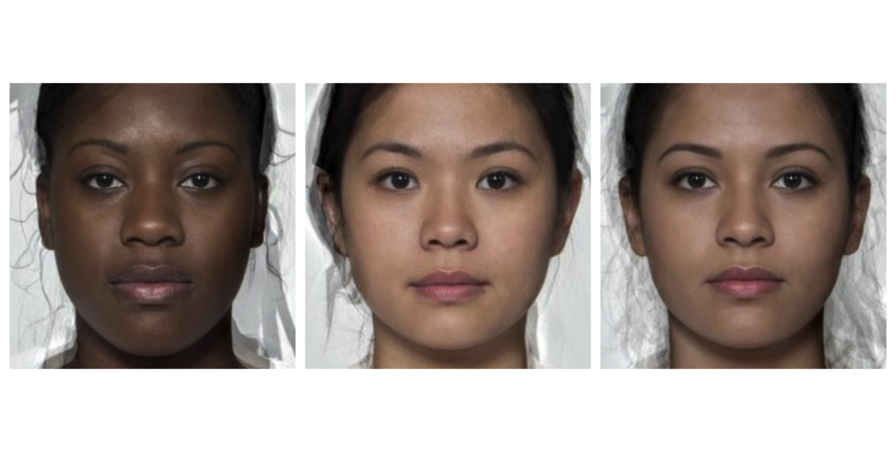

Align images so that template points line up. Defaults to two-point alignment of the first two points in your template (usually the eyes) to their mean coordinate position across the stimuli.
Usage
align(
stimuli,
pt1 = 0,
pt2 = 1,
x1 = NULL,
y1 = NULL,
x2 = NULL,
y2 = NULL,
width = NULL,
height = NULL,
ref_img = NULL,
fill = wm_opts("fill"),
procrustes = FALSE
)Arguments
- stimuli
list of stimuli
- pt1
The first point to align (defaults to 0)
- pt2
The second point to align (defaults to 1)
- x1, y1, x2, y2
The coordinates to align the first and second point to
- width, height
The dimensions of the aligned images
- ref_img
The reference image to get coordinates and dimensions from if they are NULL
- fill
background color if cropping goes outside the original image, see
color_conv()- procrustes
logical; whether to use procrustes alignment
Details
Setting pt1 the same as pt2 aligns 1 point, but does not resize or rotate images. Setting pt1 and pt2 aligns 2 points, resizing and rotating faces. Setting procrustes = TRUE uses Procrustes analysis to resize and rotate images to be as close as possible to a mean shape.
You can specify the x and y coordinates to align, and the width and height of the output images, or set them from a reference image. The reference image (ref_img) can be a stim, a 1-item stimlist, or the index or name of a stim in stimuli. It defaults to average of all stimuli if NULL.
Visualise the template points with draw_tem() to determine which to align, using pt.shape = "index".
Examples
# align eye points to specific x and y coordinates
# in a 300x300 pixel image
demo_unstandard(1:3) |>
align(pt1 = 0, pt2 = 1,
x1 = 100, x2 = 200, y1 = 100, y2 = 100,
width = 300, height = 300)

if (FALSE) {
orig <- demo_unstandard()
# align to bottom-centre of nose (average position)
one_pt <- align(orig, pt1 = 55, pt2 = 55, fill = "dodgerblue")
# align to pupils of second image
two_pt <- align(orig, ref_img = 2, fill = "dodgerblue")
# procrustes align to average position
proc <- align(orig, procrustes = TRUE, fill = "dodgerblue")
# visualise all alignments
plot_rows(
"Original" = orig,
"1-point" = one_pt,
"2-point" = two_pt,
"Procrustes" = proc,
maxwidth = 1000
)
}